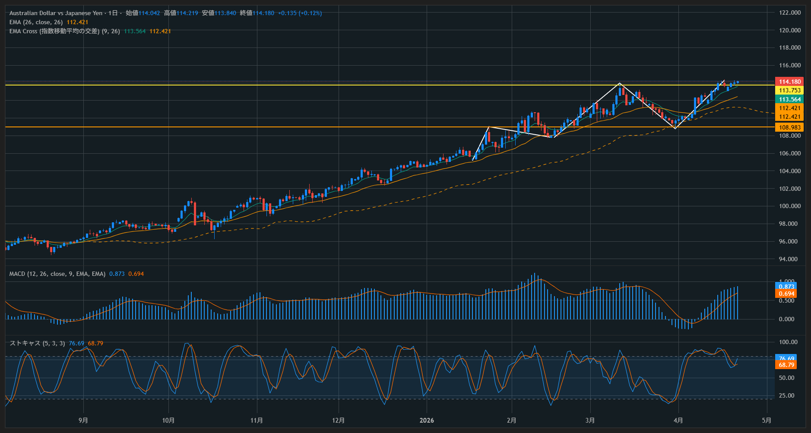
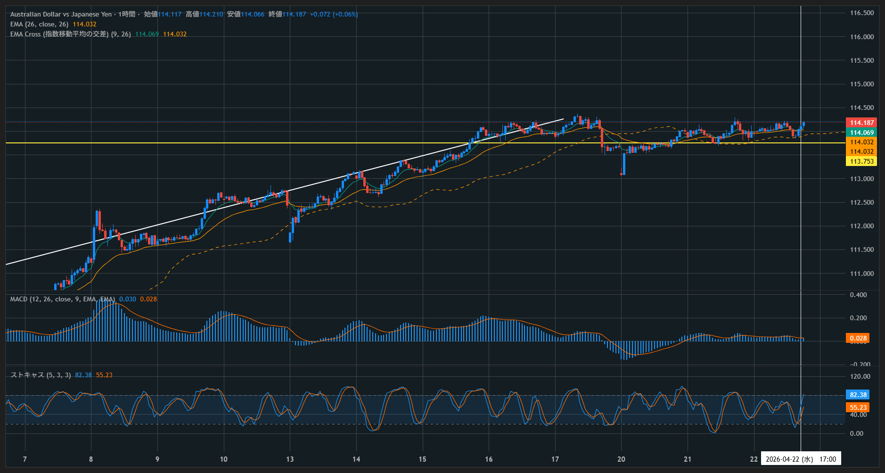

✅ 分析チェック
| カテゴリ | 項目 | 評価 |
|---|---|---|
| 環境認識 | 日足トレンド（上昇） | OK |
| 押し目形成確認 | OK | |
| インジケーター | ストキャス（ゴールデンクロス） | OK |
| MACD（上向き） | OK | |
| EMA反発 | OK | |
| エントリー | 押し目タイミング | OK |
| 位置精度 | △ | |
| 時間帯 | NY初動 | OK |
📊 結果
🏅 評価基準（ランク定義）
※勝敗ではなくルール遵守度で評価。S・Aは「プロセス正解」としてカウント。
🧠 感情ログ （1=冷静 ／ 5=パニック）
📝 振り返りメモ
上位足上昇トレンド中の押し目完了からの再上昇初動を捉えたトレード。EMA反発＋ストキャスGCによるロンドン回収ポイント。
エントリー位置がやや上でRRが低下。
・もう一段引きつけてからエントリーする
・レンジ回収かブレイク狙いか事前に明確化
・エントリー前にRR1:1以上を確保できるか確認
・トレードタイプ（回収 or 伸ばす）を事前決定
・押し目位置はEMA＋水平線重合を優先
勝ちパターンを正しく踏めた良トレード。
📷 チャート

